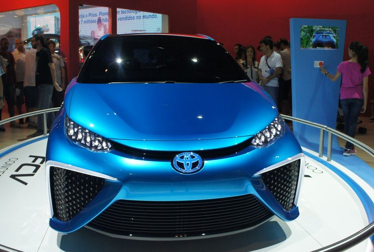
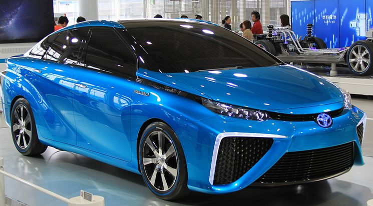
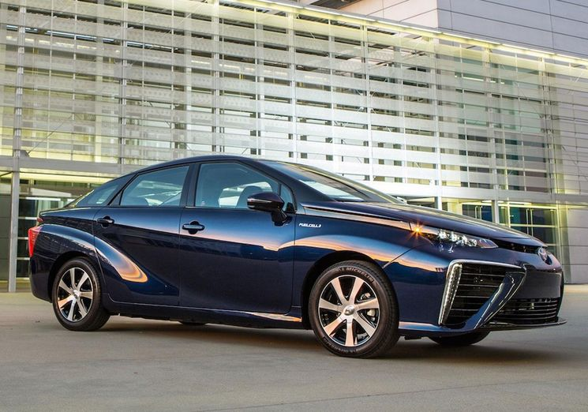
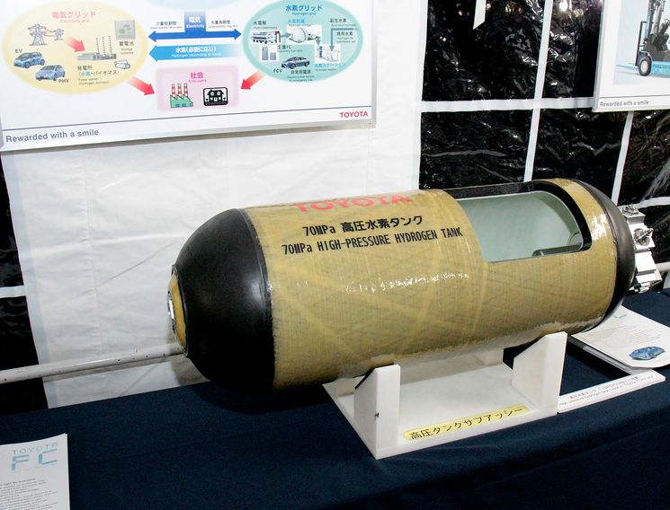
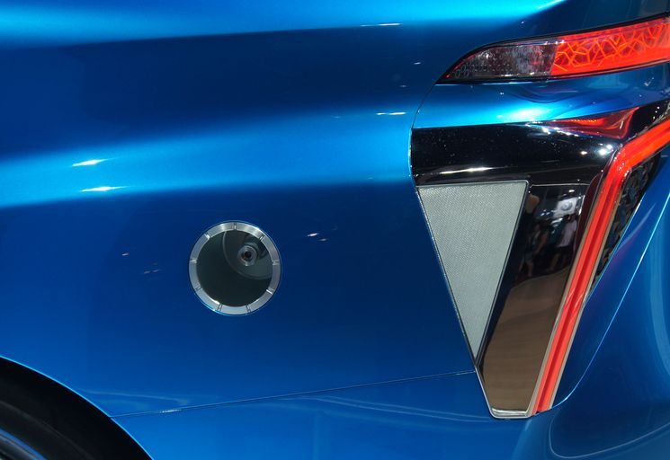
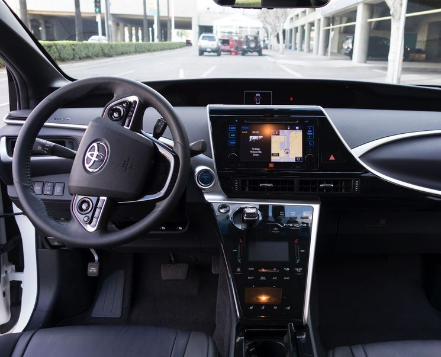
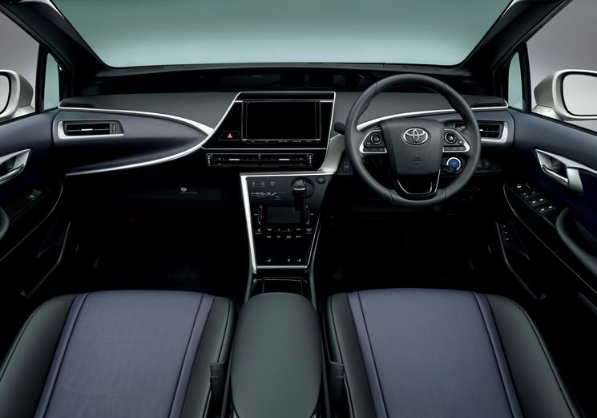
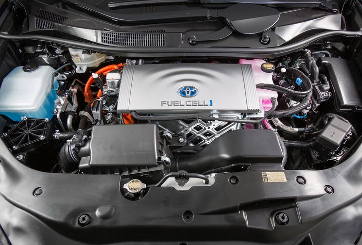
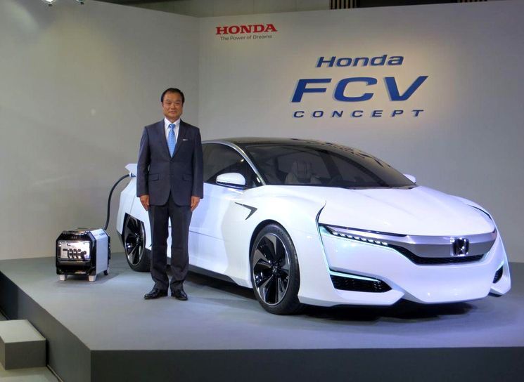

Toyota Mirai — серийный автомобиль на водороде
Ноябрь 2013 года был ознаменован тем, что концерн «Toyota» представил на всеобщее обозрение
новый автомобиль – презентабельный седан, который первым был разработан компанией как гибридное
водородное авто на топливных элеметах.
Презентация проводилась в одном из крупнейших автосалонов Токио, где президентом компании было
объявлено название оригинального изобретения, «Toyota Mirai», а также были озвучены планы концерна
на ближайшее будущее.

Именно эта установка позволяет автомобилю производить действия и выполнять свои функции при
помощи водородных топливных элементов – при химической реакции между кислородом и водородом,
и выработанной вследствие этого электроэнергии.

Процесс горения при этом не происходит, а преобразование водорода в электрический ток осуществляется
с максимальным КПД в 83% (это при среднем показателе КПД двигателей автомобилей «Toyota» — 23%).

Электродвигатель новой Toyota Mirai обладает максимальной мощностью в 154 лошадиные силы
или 113 киловатт. Вырабатываемое при помощи топливных элементов электричество проходит через
специальный повышающий преобразователь. Далее происходит преобразование постоянного тока в
переменный, увеличивая напряжение до 650 вольт.

Toyota Mirai — безопасность на дороге и в атмосфере
О преимуществах нового автомобиля можно говорить достаточно долго. Особенно уверенно и выигрышно
они выглядят в сравнении с любыми современными транспортными средствами, оснащенными двигателями
внутреннего сгорания или гибридами. Основными достоинствами «Toyota Mirai» можно считать следующие:
• Быстрая заправка – не более чем три минуты уходят на заправку двух резервуаров;
• Нулевые выбросы вредных веществ в атмосферу;
• Запас хода на одной заправке (одного бака хватит на 650 км).

Даже в сравнении с электромобилями Mirai – более успешный агрегат, учитывая хотя бы то, что
электромобили заряжаются несколько часов и проехать на одной подзарядке могут
гораздо меньшее расстояние.

Серийные автомобили на водороде в Японии и мире
Стоимость водородных автомобилей нового поколения по приблизительным расчетам будет
колебаться в пределах 57-70 тысяч долларов. Toyota Mirai поступит в «ин трейд» уже в декабре 2014 года
(для автомобильного рынка Японии), а в странах Европы и Соединенных Штатах продажи водородной
Тойоты стартуют в 2015 году.

Еще одним не до конца решенным вопросом остается проблема заправки водородных автомобилей при их
массовой продаже. В некоторых странах водородные заправочные станции уже начинают появляться,
однако широкого развития пока не наблюдается.

Например, по всей Европе таких заправок всего 82, в Америке – 124, в Китае можно
насчитать 23 водородные заправочные станции.

Кстати, еще один японский производитель заявил на днях, что пускает в серию свой
водородный автомобиль — Honda FCV (первый прототип Honda FCX Clarity был выпущен еще в 1999 году)
и в 2016 новая Fuel Cell eXperimental Хонда будет продаваться в Японии, Европе и США.
|
|